Paris 8e
Un immeuble de la rue de l'Arcade, entre la Madeleine et Saint-Lazare, repensé appartement par appartement. D'un étage à l'autre, les plans se répondent et les matières changent : chêne clair et marbre violet ici, noyer et marbre doré là.
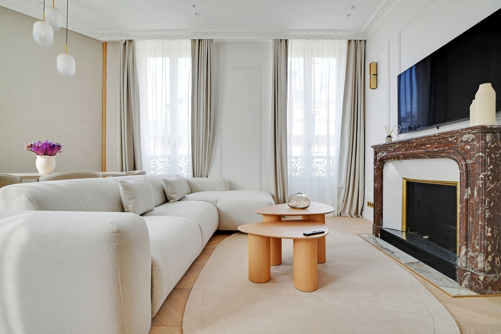
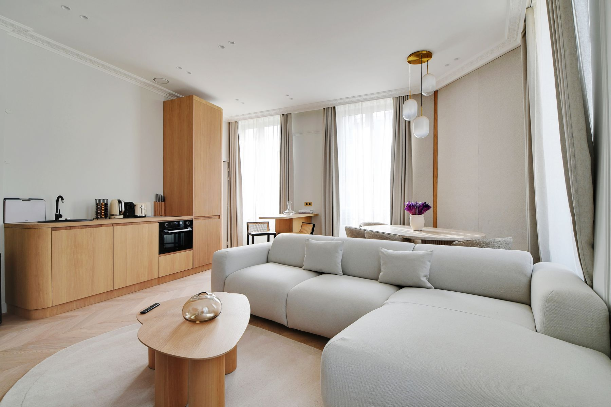
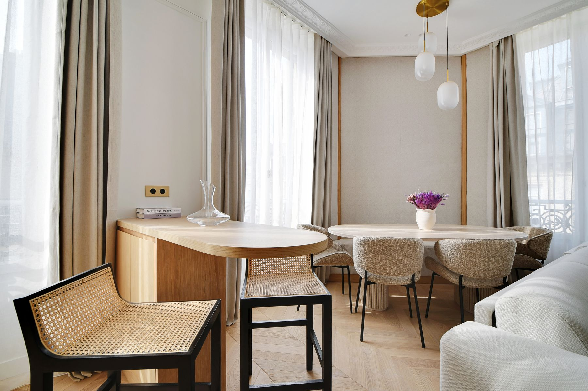
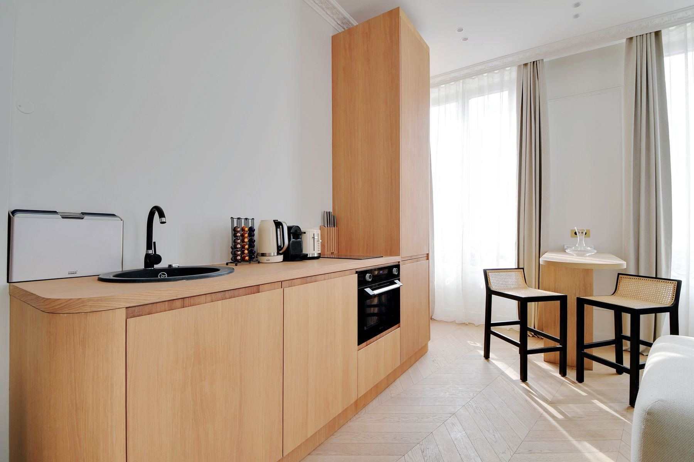
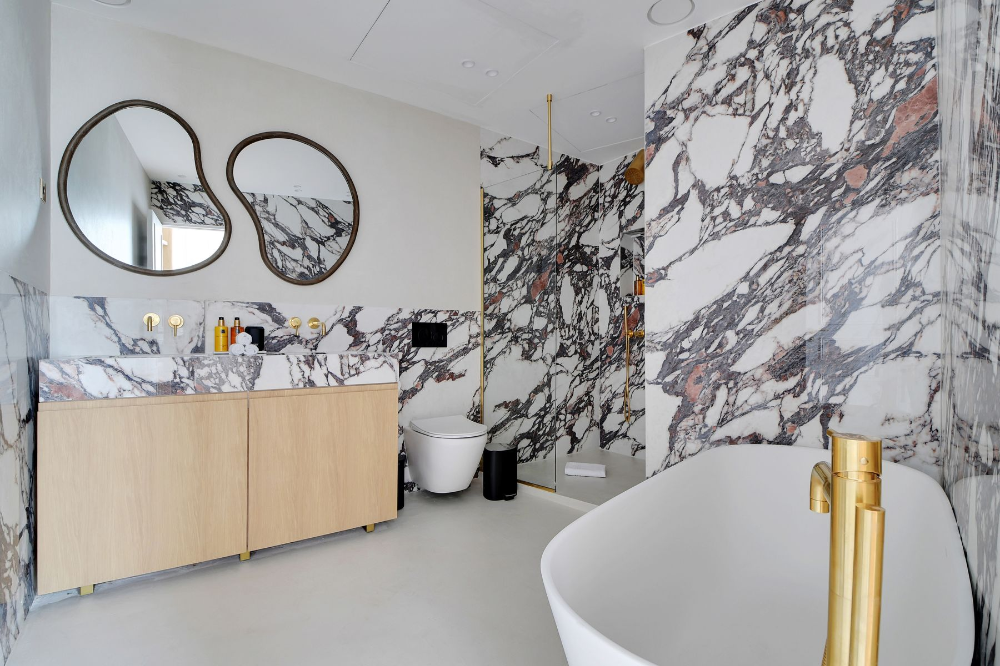
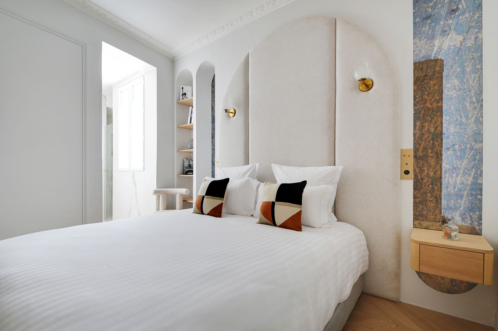
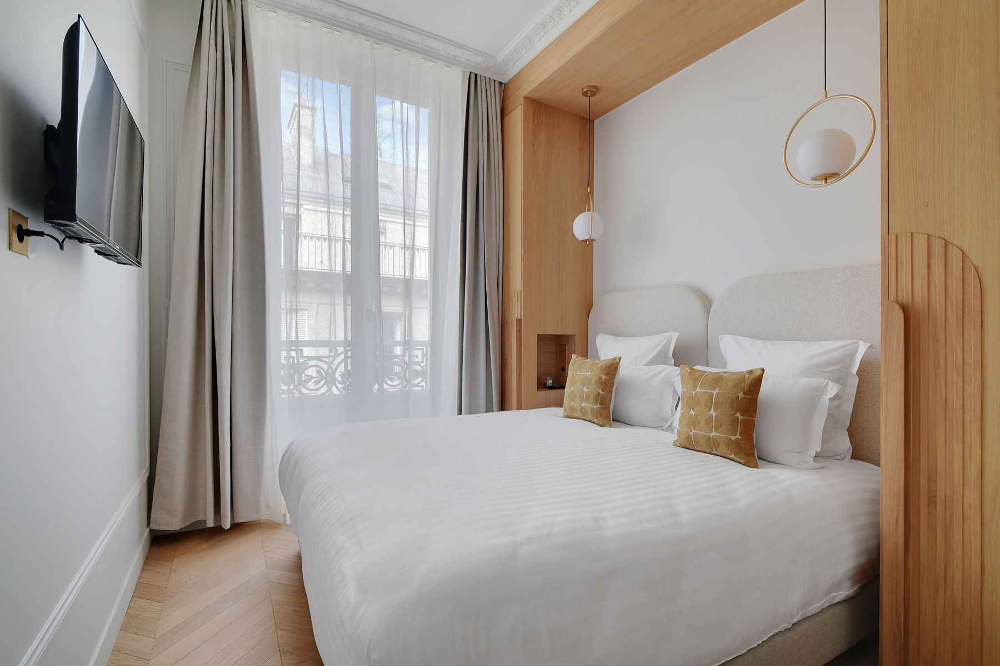
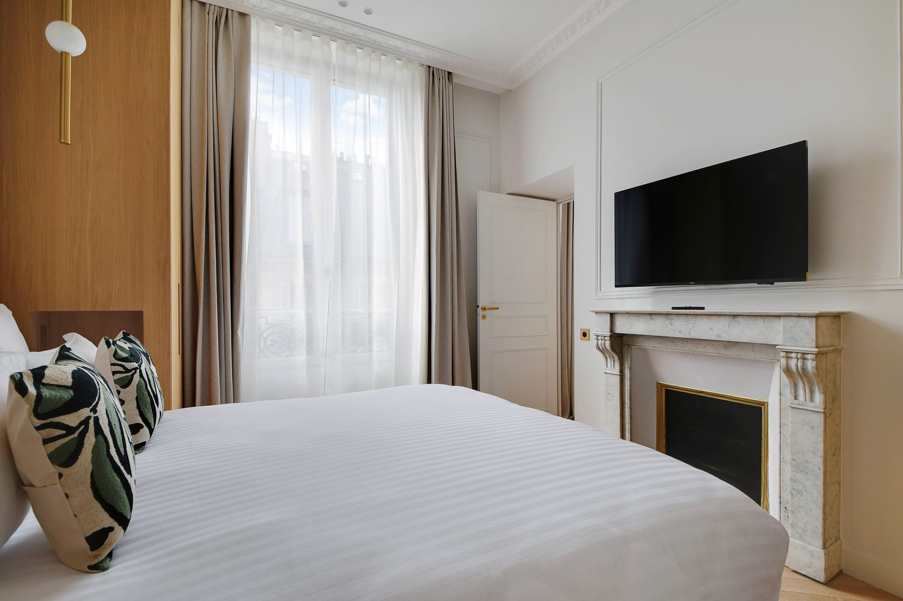
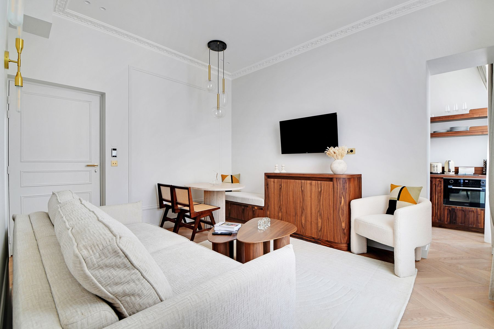
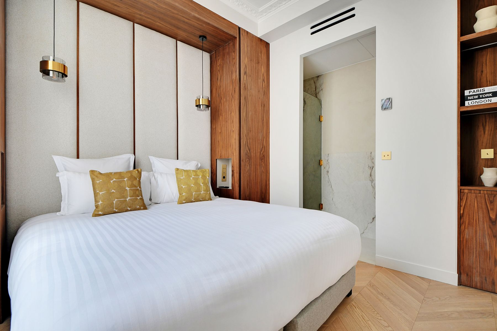
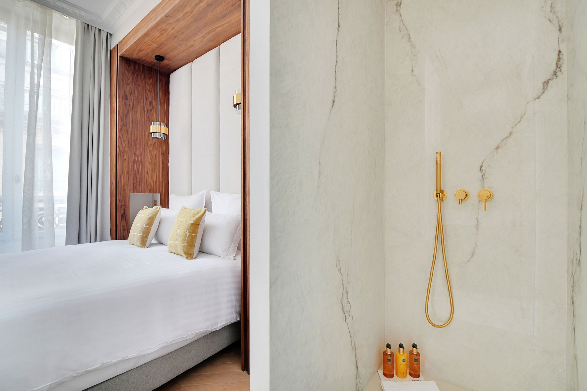
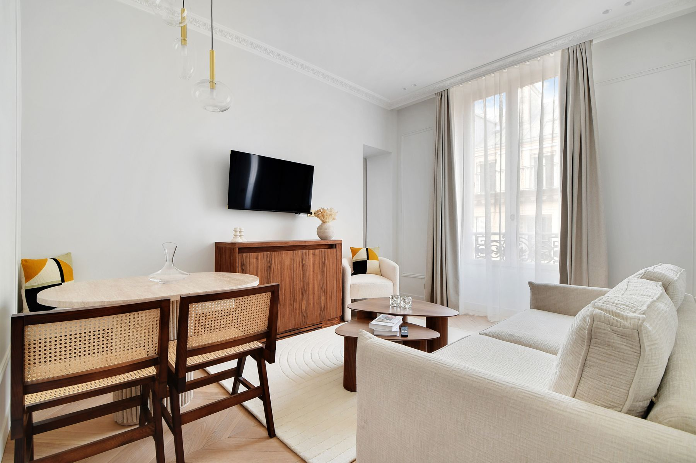
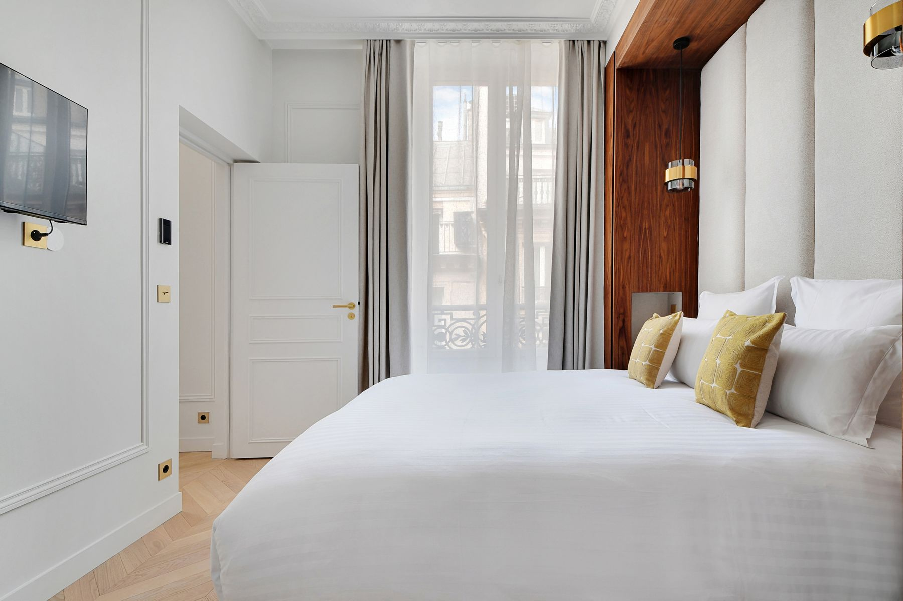
La rue de l'Arcade relie la place de la Madeleine à la gare Saint-Lazare, dans le 8e arrondissement. L'immeuble a été repris logement par logement, du deux-pièces au duplex sous les toits. Chaque appartement a reçu un dessin propre, mais tous partagent la même exigence : menuiseries sur mesure, matières naturelles, pièces d'eau traitées en pierre.
Les grands appartements déclinent un même parti d'un étage à l'autre : cheminée de marbre rouge conservée dans le séjour, cuisine en chêne clair aux angles arrondis, têtes de lit en arche flanquées de niches en marbre, salle de bains en marbre blanc veiné de violet avec deux miroirs aux contours organiques. Le plus abouti est présenté en détail sur la page Arcade.
Les deux-pièces prennent l'autre registre : console et niches en noyer, tête de lit capitonnée encadrée de bois sombre, suspensions en laiton, douche en marbre doré veiné. À petite surface, ces appartements misent sur une seule pièce d'eau pleinement assumée plutôt que sur l'accumulation. Voir Deux Pièces Chic.
Dans cet immeuble, on retrouve : le Duplex Madeleine, au dernier étage ; Arcade, un quatre-pièces en chêne et marbre ; Madeleine, un 65 m² aux beiges dorés ; Faïence, un deux-pièces organisé autour d'un poêle ancien ; et Deux Pièces Chic, un 45 m² en noyer et marbre doré.
Ce projet fait partie des réalisations de design d'intérieur à Paris de John Rozenblum. Pour discuter d'un projet similaire ou d'une rénovation sur mesure, prenez contact.
Un projet ?
Chaque projet commence par une conversation. Partagez votre vision — je m'occupe du reste.
Prendre contact